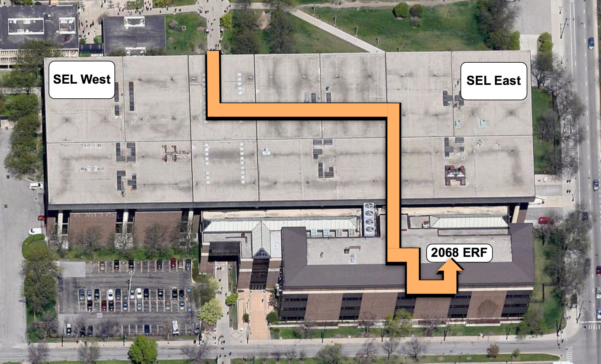

Welcome to CS 424
Visualization and Visual Analytics
Announcements:
12/17/12 - final grades have been
posted
12/11/12 - grades for Project 4
and viewer's choice have been posted
11/14/12 - grades for Project 3
have been posted
10/30/12 - grades for Project 2
have been posted - Arthur will be sending out detailed emails
on the grading
10/21/10 - groups for project 3
have been finalized and are listed on the talks page
10/10/12 - At the end of
September a lynda.com tutorial appeared on Interactive Data
Visualization with Processing. UIC students can use their ID
to access lynda via
http://tigger.uic.edu/depts/accc/training.html/ It mostly
focuses on the basics of using and writing apps for
processing.
10/8/2012 - grades for Project 1
have now been posted
9/28/12 - groups for project 2
have been finalized
9/18/12 - Students who have asked
for wireless access should now have it through evl-guest in
the classroom
8/20/12 - Welcome to cs 424 - CS
424 will be meeting in room 2068 ERF which is located at the
corner of Halsted and Taylor. The easiest way to get to this
room is to go to the 2nd floor of SEL East near the vending
machines that are close to the CS department computer labs.
Then you can walk South (toward Taylor street), pass through
two sets of dark brown doors, pass the elevators and restrooms
on your left and hit the security door to ERF. This door
should be open around class time. After that you can follow
the signs on the walls to the left then right then left to
2068 ERF

Current Issues
ACCC
has a web page on how to get started creating a web page at
UIC. It may be a good place to start if you do not have an
external hosting service -
http://www.uic.edu/depts/accc/webpub/begin.html
Here
is a link to Victor's tutorial on using processing in Eclipse
- http://danielsauter.com/teaching/AD456_F11/?p=338
Other Books you
may want to look at
Visual Display of Quantitative Information, 2nd ed
by Edward Tufte
Envisioning Information by Edward Tufte
Visual Explanations - Images and Quantities,
Evidence and Narrative by Edward Tufte
Beautiful Evidence by Edward Tufte
Information Visualization, Perception for Design
2nd ed: by Colin Ware
Show Me the
Numbers: Designing Tables and Graphs to Enlighten by Stephen Few
Information
Graphics - a Comprehensive Illustrated Reference by Robert
Harris
Visualization
Handbook - Hansen and Johnson eds
Understanding
place - GIS mapping across the curriculum by Sinton and Lund